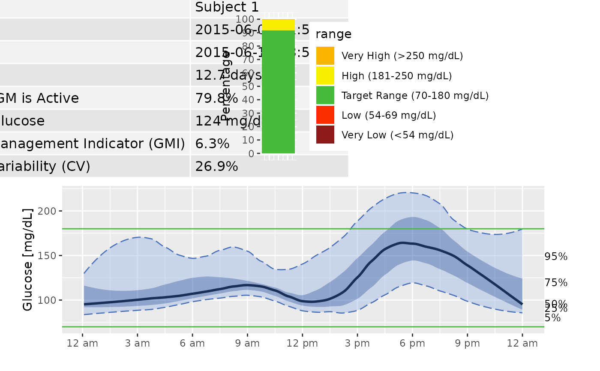

Display Ambulatory Glucose Profile (AGP) statistics for selected subject
Arguments
- data
DataFrame object with column names "id", "time", and "gl". Should only be data for 1 subject. In case multiple subject ids are detected, a warning is produced and only 1st subject is used.
- maxd
Default: 14. Number of days to plot. If less than `maxd` days of data are available, all days are plotted.
- inter_gap
The maximum allowable gap (in minutes) for interpolation. The values will not be interpolated between the glucose measurements that are more than inter_gap minutes apart. The default value is 45 min.
- dt0
The time frequency for interpolation in minutes, the default will match the CGM meter's frequency (e.g. 5 min for Dexcom).
- tz
A character string specifying the time zone to be used. System-specific (see
as.POSIXct), but " " is the current time zone, and "GMT" is UTC (Universal Time, Coordinated). Invalid values are most commonly treated as UTC, on some platforms with a warning.- daily
Default: TRUE. Logical indicator whether AGP should include separate daily plots.
Value
A plot displaying glucose measurements range, selected glucose statistics (average glucose, Glucose Management Indicator,
References
Johnson et al. (2019) Utilizing the Ambulatory Glucose Profile to Standardize and Implement Continuous Glucose Monitoring in Clinical Practice, Diabetes Technology and Therapeutics 21:S2 S2-17-S2-25, doi:10.1089/dia.2019.0034 .
Examples
data(example_data_1_subject)
agp(example_data_1_subject, daily = FALSE)
